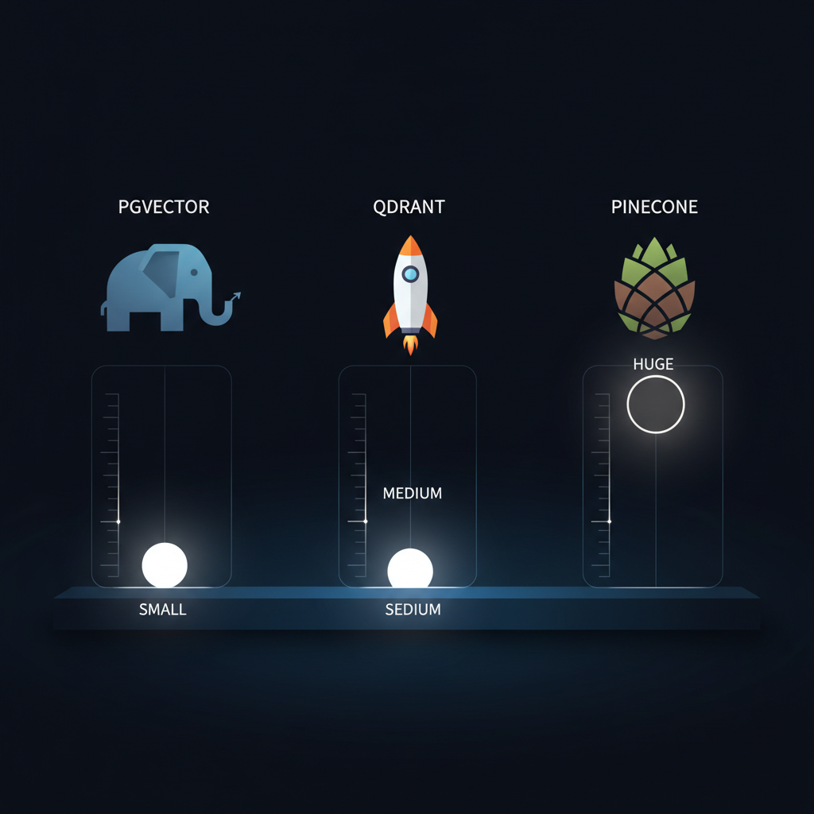

Você construiu uma feature de busca. Usuário digita query, app bate no database, resultados voltam ranqueados por relevância. Funciona perfeitamente.
Aí você pensa: a busca precisa entender o que o usuário quis dizer, não só casar palavras. Quem procura "como eu faço login" deveria achar resultados sobre "acesso à conta" e "entrar" mesmo que essas palavras exatas nunca apareçam.
Isso se chama semantic search. E exige uma abordagem completamente diferente pra armazenar e buscar dados.
O problema: tudo que tornava seu banco relacional rápido — índices B-tree, cláusulas WHERE, keyword matching — foi feito pra valores exatos. Semantic search não trabalha com valores exatos. Trabalha com significado, e significado é muito mais difícil de buscar eficientemente. Uma busca que demorava milissegundos passa a demorar segundos. Quanto maior o dataset, pior.
Este post é adaptação enriquecida em PT-BR do "Vector Database - A Deep Dive" de Maxine Meurer e Neo Kim, com comparativos atualizados de 2026 (pgvector vs Qdrant vs Pinecone vs Weaviate vs Milvus), trade-offs reais de produção, e o framework de decisão.
Por que bancos tradicionais quebram com embeddings
Bancos relacionais são ótimos em exact matches e range queries. WHERE user_id = 12345 usa índice pra pular direto na linha. Dicionário não lê página por página — vai direto à seção.
Embeddings quebram esse modelo porque não há valor exato pra procurar. Um embedding é uma lista de números que representa significado. Frases similares produzem números similares. Você não procura linha específica — procura linhas próximas em significado. "Próximo" exige medir distância em espaço de alta dimensão (tipicamente 768, 1.536 ou 3.072 dimensões) em vez de comparar valores.
Pense num mapa normal com latitude/longitude (2 dimensões). Embeddings são o mesmo conceito, com 1.536 dimensões em vez de 2.
O problema O(n) — analogia Times Square
Imagine que você está na Times Square e precisa achar as 10 cafeterias mais próximas. Sem mapa ou sistema organizado, sua única opção:
- Andar até cada prédio.
- Checar se é cafeteria.
- Medir distância de Times Square.
- Manter lista das 10 mais próximas.
Com 10 mil prédios, checa 10 mil. Com 10 milhões, checa 10 milhões.
Em termos práticos: 10.000 chunks de documento × 0,0001s por cálculo = 1s por query. Tolerável. Mas com 10 milhões de chunks, vira 1.000 segundos por query (16 minutos). Servindo 100 QPS de usuários diferentes? Sistema morre imediatamente.
É por isso que bancos tradicionais sofrem com embeddings. Índices foram feitos pra exact matches. Não há atalho pra "similar" — só "igual".
pgvector — o "good enough" pra começar
pgvector é extensão do PostgreSQL que adiciona busca vetorial. Vantagens enormes:
- Você já tem Postgres em prod. Sem nova database pra operar.
- Compõe perfeitamente com SQL normal — combine vector search com WHERE, JOIN, transactions.
- Operacionalmente mínimo: backups, replicação, security — tudo que você já sabe fazer.
- Suporta HNSW e IVFFlat desde a v0.5.
Sweet spot: até ~100K-1M vetores, query volume moderado, latência ~50-200ms aceitável. Para muita coisa de produção, pgvector é tudo que você precisa.
Quando você passa de alguns milhões e exige latência sub-50ms consistente, a infra Postgres genérica vira gargalo. Aí entram os vector DBs dedicados.
Arquitetura — as 3 camadas de um vector DB
Todo vector DB tem três camadas com trade-offs operacionais:
1. Storage Layer — onde os vetores moram
Vetores são gigantes. Um vetor de 1.536 dimensões em float32 ocupa 6 KB. Milhões de vetores = gigabytes que custam dinheiro real.
Solução: quantization. Reduz a precisão de cada dimensão:
- Scalar quantization: float32 → int8 (4× menor).
- Product quantization (PQ): divide vetor em sub-vetores quantizados separadamente.
- Binary quantization: 1 bit por dimensão (32× menor!) — surpreendentemente útil em escala.
Trade-off: approximation error. Você ocasionalmente perde o "verdadeiro" match mais próximo, mas na prática a diferença é tão pequena que aplicações não notam.
Outra decisão: memória vs disco. Para latência mínima, índice na RAM. Caro em escala. Vector DBs modernos suportam tiered storage — vetores quentes em RAM, frios em disco, ou estrutura de índice em RAM com vetores brutos em disco.
2. Indexing Layer — onde a "mágica" acontece
HNSW (Hierarchical Navigable Small World) é o algoritmo dominante. Conceito: small world networks — você está a poucas conexões de qualquer outra pessoa do planeta.
HNSW constrói grafo multi-camada onde vetores similares estão conectados. Quando você faz query, algoritmo começa na top layer e navega em direção ao alvo seguindo edges pra vizinhos similares, descendo camadas até chegar nos mais similares no bottom.
Analogia Google Maps de NY pra cafeteria em SF:
- Top layer (zoom out): direção geral — costa oeste, segue conexões pra Califórnia.
- Middle layers: narrow down — Bay Area, San Francisco.
- Bottom layer (street level): bairro específico, endereço exato.
Em cada nível de zoom, você segue só as conexões que te aproximam do alvo. Pula vastas porções do mapa na direção errada.
Parâmetros chave: M (max connections por vetor) e ef (exploration factor). Maior = melhor acurácia, queries mais lentas. Menor = queries rápidas, mas pode perder resultados relevantes. Tunagem em produção depende da sua tolerância latência/acurácia.
Outros algoritmos relevantes: IVF (Inverted File Index), DiskANN (Microsoft, otimizado pra disco), ScaNN (Google), Vamana (base do DiskANN). HNSW é default em quase todo lugar.
3. Query Layer — ANN search + filtering
Quando query chega: query vector → ANN (Approximate Nearest Neighbor) search via HNSW → top-K candidatos → opcional metadata filtering → rerank → resultado.
Metadata filtering tem armadilha sutil: pre-filter vs post-filter.
- Post-filter: vector search primeiro, depois filtra por metadata. Simples mas pode retornar lista vazia se o top-K não bate com o filtro.
- Pre-filter: filtra metadata primeiro, depois vector search só nos candidatos. Mais correto mas mais complexo (índice precisa suportar isso bem).
Pinecone, Qdrant e Weaviate suportam pre-filter eficiente. pgvector é tradicionalmente post-filter (com gambiarras pra pre-filter).
O cenário de vector DBs em 2026

pgvector — Postgres extension
Quando usar: você já tem Postgres, dataset até ~5M vetores, simplicidade > performance bleeding-edge.
Prós: zero infra extra, SQL composability, transactions, custo praticamente zero.
Contras: latência menos previsível em escala, tooling menos especializado.
Qdrant — open-source Rust
Quando usar: você quer melhor performance que pgvector, valoriza self-hosted, prefere open-source com cloud opcional.
Prós: filtering avançado, payload rich, Rust = rápido e eficiente, free self-hosted.
Contras: operacional extra vs pgvector, comunidade menor que Pinecone.
Pinecone — SaaS managed
Quando usar: você quer zero ops, está em escala, e cliente paga.
Prós: latência sub-50ms confiável, serverless, índices pré-otimizados, suporte enterprise.
Contras: caro em volume, lock-in, sem self-hosted, querying via SDK proprietário.
Weaviate — schema-rich + híbrido
Quando usar: você precisa de hybrid search nativo (vector + BM25), GraphQL API, ou ML modules built-in.
Prós: hybrid search excelente, generative search módulos, multi-tenant maduro.
Contras: mais opinionated, curva de aprendizado mais alta.
Milvus — cloud-native scale
Quando usar: bilhões de vetores, infra Kubernetes existente, equipe de infra sólida.
Prós: separação storage/compute, escala horizontal real, suporta múltiplos índices (HNSW, IVF, DiskANN).
Contras: complexo operacionalmente, exige K8s.
Voyager (Spotify) / FAISS — embedded libs
Quando usar: dataset cabe em RAM, sem necessidade de persistência distribuída, batch jobs.
Prós: trivial de adicionar, latência mínima, sem infra.
Contras: sem persistência transparente, single-node only.
Realidades de produção que pegam todo mundo
1. Index build é caro
Inserir vetores em HNSW exige calcular distâncias e atualizar conexões do grafo. Bulk index build geralmente roda offline ou em períodos de baixo tráfego. Index build time importa: afeta velocidade de recovery de falhas, deploys, e onboarding de dados novos.
2. Custo escala com dimensões × N × replicas
Pinecone serverless cobra por storage GB-month + queries. Self-hosted (Qdrant/Milvus) cobra em CPU+RAM. Faça as contas antes:
10M chunks × 1536 dim × 4 bytes = ~61 GB raw
+ HNSW index overhead (1.5-2x) = ~100 GB total
+ replicas (3x) = ~300 GB
+ memória pra latência = SSDs NVMe + RAM proporcional3. Embedding consistency
Query embedding e document embeddings devem usar o mesmo modelo. Trocou de OpenAI v2 pra v3? Re-embedding obrigatório de toda a base. Esse re-embedding pode custar dezenas de milhares de dólares em datasets grandes.
4. Monitoring que importa
- Latência p50/p95/p99 por query.
- Recall@K vs ground truth (mede degradação).
- Index size / memória usada.
- Index build time.
- Failed inserts (vector com NaN, dimensão errada).
Framework de decisão — qual vector DB usar?
- Dataset < 1M vetores E você tem Postgres? → pgvector. Pare aqui.
- 1M–50M, self-hosted ok, time DevOps razoável? → Qdrant ou Weaviate.
- 1M–50M, quer zero ops, budget aberto? → Pinecone serverless.
- 50M+ e Kubernetes maduro? → Milvus distribuído.
- Hybrid search (vector + BM25) é requisito? → Weaviate ou Qdrant nativo, ou pgvector + ts_vector.
- Latência sub-10ms p99 obrigatório? → Pinecone, Vespa, ou FAISS embedded.
Conclusão
Vector databases não são "novo banco de dados que substitui Postgres". São infraestrutura especializada pra um workload específico: nearest-neighbor search em espaço de alta dimensão. Quando você entende que o problema fundamental é "como evitar comparar contra cada vetor sem perder muito recall", todas as decisões de arquitetura (HNSW, quantization, filtering, replication) fazem sentido.
A maior armadilha é over-engineering. Comece com pgvector. Se atingir limite, então invista. A maioria dos sistemas RAG em produção hoje roda em pgvector sem problema — só pivota quando há evidência clara (latência p99 ruim, custo de Postgres explodindo, dataset acima de 10M).
Fonte original: "Vector Database - A Deep Dive" por Maxine Meurer e Neo Kim, publicado em The System Design Newsletter em 25 de abril de 2026. Esta adaptação em PT-BR adiciona comparativos atualizados de 2026, framework de decisão, e armadilhas operacionais que peguei pessoalmente em produção. Recomendo o newsletter "I Love DevOps" da Maxine e o livro "LLMs for Humans: From Prompts to Production".